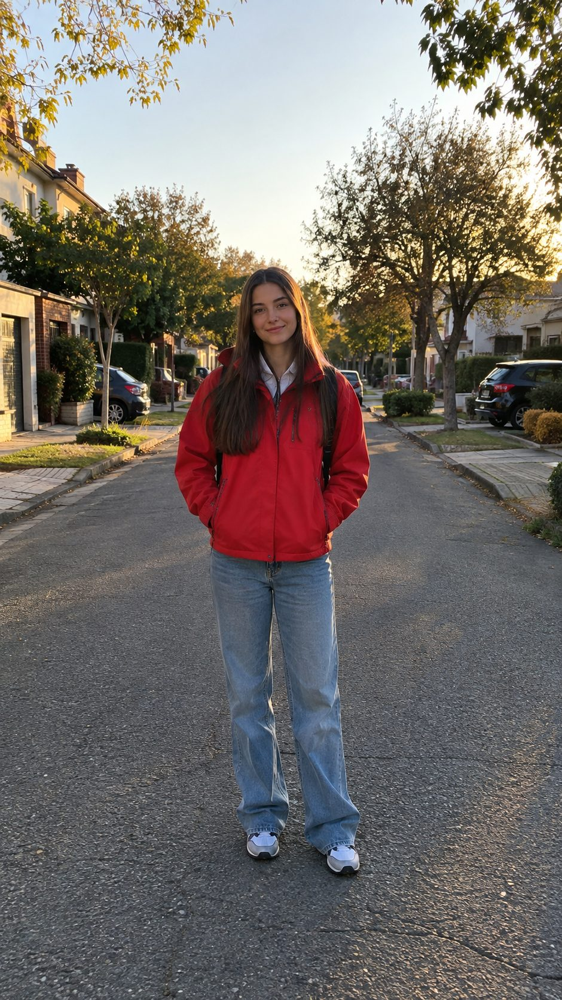
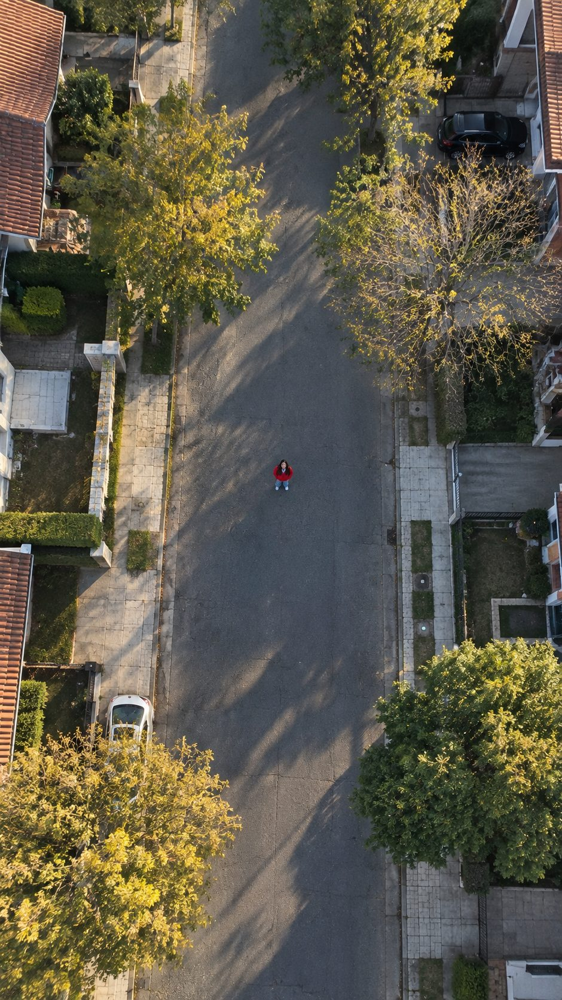
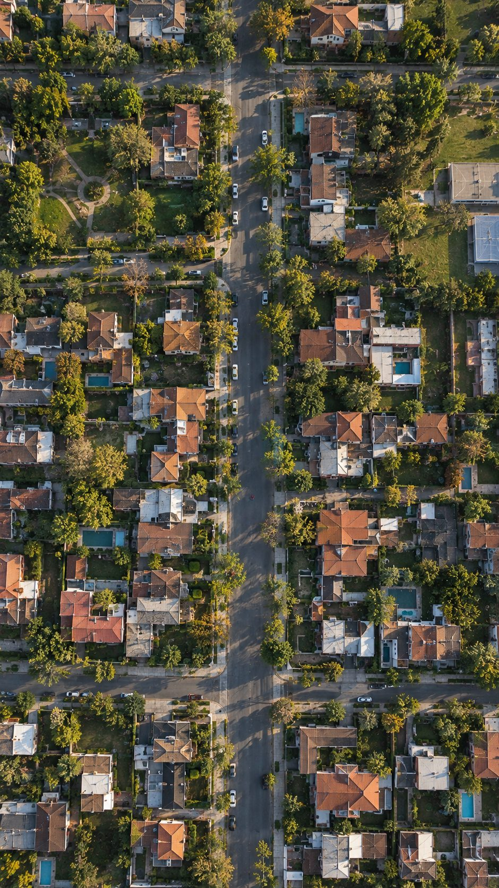
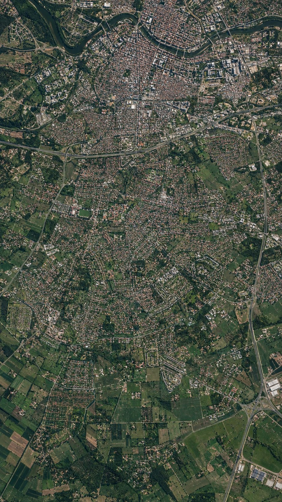
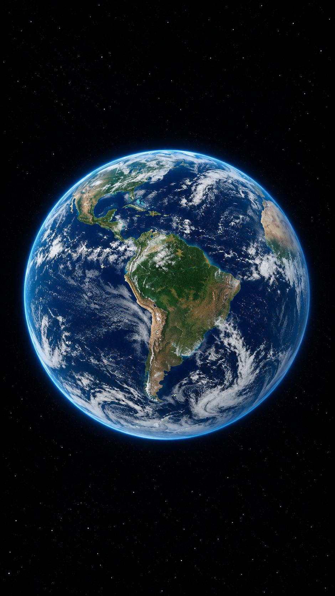
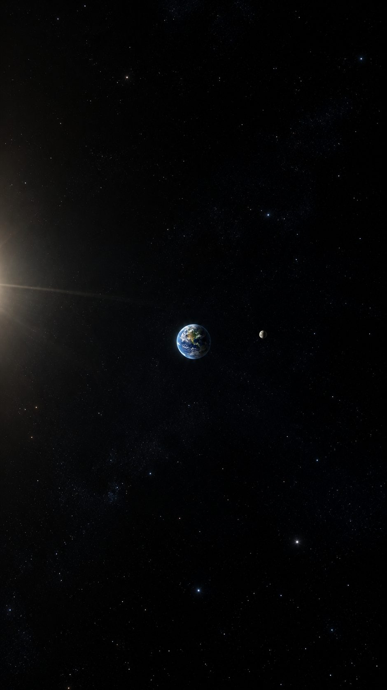
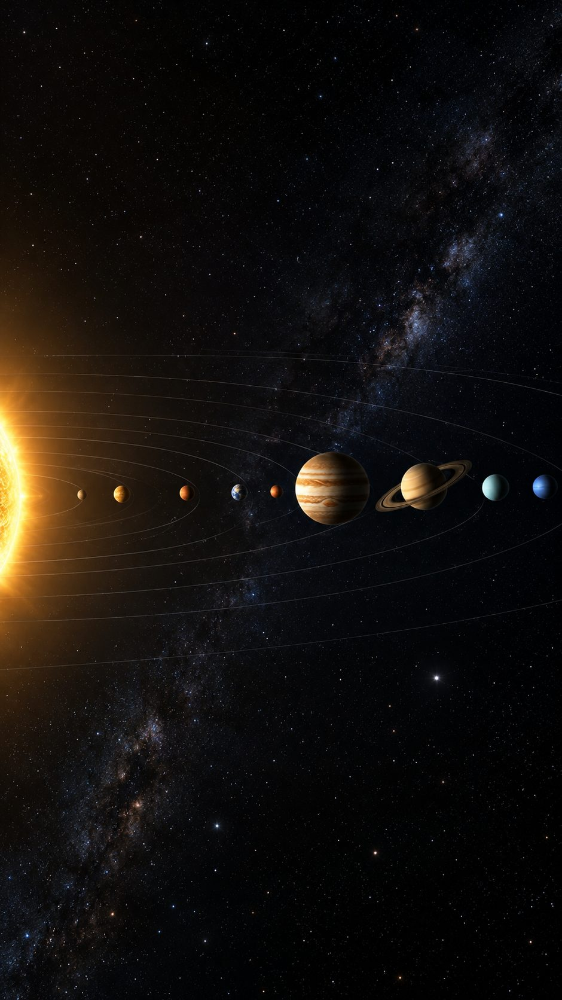

EARTH
Our home world: oceans, plate tectonics and the only atmosphere we know that supports life.
- Distance from Sun
- 1.00 AU
- Length of day
- 24 h
- Moons
- 1
Learn more about the fascinating details that we call our home,
Planet Earth. Course enrollment
starts today. Early Bird tickets typically
last a week, don’t miss out!







Planets
Each course orbits one planet: its surface, its sky and what it can teach us about our own. Start with the one that pulls you in.
Our home world: oceans, plate tectonics and the only atmosphere we know that supports life.

Earth’s scorching twin, wrapped in sulphuric clouds and spinning backwards beneath them.

The rust-red frontier: ancient riverbeds, the tallest volcano in the solar system and our next destination.
Tuition
Simple monthly plans. Cancel anytime. Early Bird pricing applies for the first week of enrollment.
$0/ month
$29/ month
$79/ month
Tutorials
Short, focused video lessons you can finish on a coffee break.
Find Venus and Mars with nothing but your eyes and a clear evening.
A runaway greenhouse effect explained in five simple diagrams.
What dry riverbeds and polar ice tell us about the planet’s past.
How continents drift, mountains rise and earthquakes happen.
Blog
News, stories and stargazing tips from the SpaceEdu team.
A day there lasts longer than its year, and that’s only the start.
Read article →When to look, where to look and what gear you actually need.
Read article →Ten images from orbit that changed how we see our planet.
Read article →Enroll
Course enrollment starts today. Early Bird tickets typically last a week, so don’t miss out!